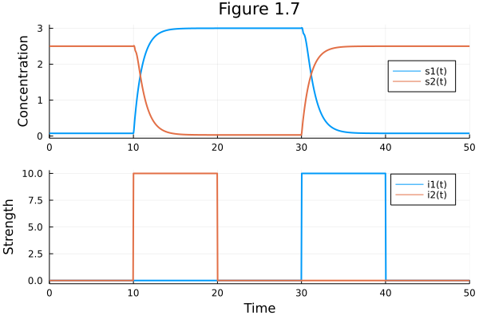
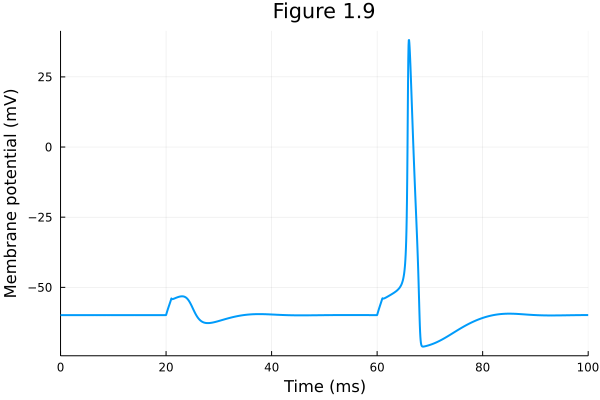
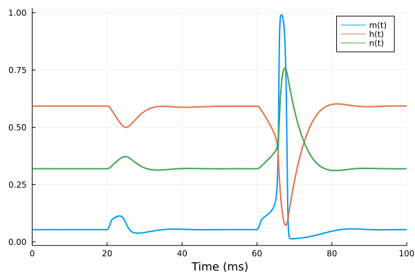
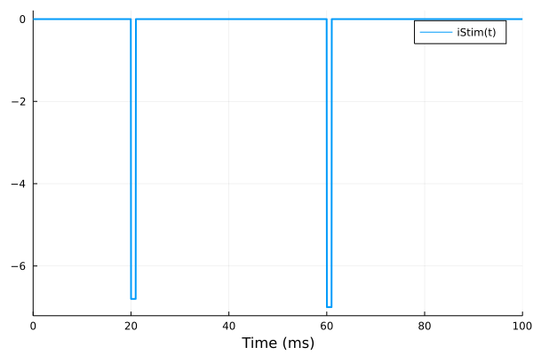

Chapter 1
Contents
Chapter 1#
Fig 1.07 Collins toggle switch#
For Figures 1.7, 7.13, 7.14, 7.15
using DifferentialEquations
using ModelingToolkit
using Plots
Plots.gr(lw=2)
Plots.GRBackend()
# Convenience functions
hill(x, k) = x / (x + k)
hill(x, k, n) = hill(x^n, k^n)
hill (generic function with 2 methods)
# Model
@parameters a1 a2 β γ
@variables t s1(t) s2(t) i1(t) i2(t)
D = Differential(t)
# Time-dependent inhibitor levels
i1_fun(t) = ifelse(30<= t <= 40, 10, 0)
i2_fun(t) = ifelse(10<= t <= 20, 10, 0)
@register i1_fun(t)
@register i2_fun(t)
@named collinsSys = ODESystem([ i1 ~ i1_fun(t),
i2 ~ i2_fun(t),
D(s1) ~ a1 * hill(1 + i2, s2, β) - s1,
D(s2) ~ a2 * hill(1 + i1, s1, γ) - s2])
\[\begin{split} \begin{align}
\frac{ds1(t)}{dt} =& \frac{\left( 1 + \mathrm{i2}\left( t \right) \right)^{\beta} a1}{\left( 1 + \mathrm{i2}\left( t \right) \right)^{\beta} + \left( \mathrm{s2}\left( t \right) \right)^{\beta}} - \mathrm{s1}\left( t \right) \\
\frac{ds2(t)}{dt} =& \frac{\left( 1 + \mathrm{i1}\left( t \right) \right)^{\gamma} a2}{\left( 1 + \mathrm{i1}\left( t \right) \right)^{\gamma} + \left( \mathrm{s1}\left( t \right) \right)^{\gamma}} - \mathrm{s2}\left( t \right) \\
\mathrm{i1}\left( t \right) =& \mathrm{i1}_{fun}\left( t \right) \\
\mathrm{i2}\left( t \right) =& \mathrm{i2}_{fun}\left( t \right)
\end{align}
\end{split}\]
collinsSys = structural_simplify(collinsSys)
\[\begin{split} \begin{align}
\frac{ds1(t)}{dt} =& \frac{\left( 1 + \mathrm{i2}\left( t \right) \right)^{\beta} a1}{\left( 1 + \mathrm{i2}\left( t \right) \right)^{\beta} + \left( \mathrm{s2}\left( t \right) \right)^{\beta}} - \mathrm{s1}\left( t \right) \\
\frac{ds2(t)}{dt} =& \frac{\left( 1 + \mathrm{i1}\left( t \right) \right)^{\gamma} a2}{\left( 1 + \mathrm{i1}\left( t \right) \right)^{\gamma} + \left( \mathrm{s1}\left( t \right) \right)^{\gamma}} - \mathrm{s2}\left( t \right)
\end{align}
\end{split}\]
u0 = [s1 => 0.075, s2 => 2.5]
p = [a1 => 3.0, a2 => 2.5, β => 4.0, γ => 4.0]
tend = 50.0
50.0
prob = ODEProblem(collinsSys, u0, tend, p)
ODEProblem with uType Vector{Float64} and tType Float64. In-place: true
timespan: (0.0, 50.0)
u0: 2-element Vector{Float64}:
0.075
2.5
sol = solve(prob)
retcode: Success
Interpolation: specialized 4th order "free" interpolation, specialized 2nd order "free" stiffness-aware interpolation
t: 53-element Vector{Float64}:
0.0
0.38548049109061366
1.2786313460900232
2.4645386792321373
4.060892945984294
6.199065054804432
9.163107065232861
9.798821864725875
9.894590162805262
9.947636075298046
9.996301423477638
10.23722094203746
10.34838234520412
⋮
34.06255165092937
34.82275637408879
35.64142133916211
36.52445301238044
37.49625914962719
38.58250042101796
39.82254931883902
41.26704650993013
43.53691235755657
45.44658733089189
48.5164727300441
50.0
u: 53-element Vector{Vector{Float64}}:
[0.075, 2.5]
[0.07496310584167311, 2.4999747263084027]
[0.07491895384179861, 2.4999431041589903]
[0.07489947360147257, 2.499927975741181]
[0.07489347508728135, 2.499922722288745]
[0.07489238103870448, 2.499921565722214]
[0.07489230549278117, 2.4999214349680674]
[0.0748922449641817, 2.4999213970779466]
[0.07489223892253222, 2.4999213931929236]
[0.0748922358343386, 2.4999213911968248]
[0.07489223315204752, 2.4999213894569734]
[0.6462807087472966, 2.3641056563487988]
[0.8932594023101893, 2.3080817816301042]
⋮
[0.18350766831162407, 2.457178185889596]
[0.12750579953270078, 2.4799762316830924]
[0.09894856451913885, 2.4911679542430694]
[0.08521528183259243, 2.4963468596995204]
[0.07895135988390187, 2.498616989186517]
[0.07631641409618092, 2.4995327250648245]
[0.07531836957176008, 2.499864345879911]
[0.07499400326220557, 2.499906477742448]
[0.0749080118827727, 2.4999190617563256]
[0.07489484525314517, 2.4999209644768356]
[0.07489326982254921, 2.499921206827667]
[0.07489243892146603, 2.499921319299166]
pl0107a = plot(sol, legend=:right, xlabel = "", ylabel="Concentration", title="Figure 1.7")
# Tracking intermediate variables
pl0107b = plot(sol, vars = [i1, i2], xlabel="Time", ylabel="Strength")
plot(pl0107a, pl0107b, layout=(2, 1))

Fig 1.09 Hodgkin-Huxley model#
using DifferentialEquations
using ModelingToolkit
using Plots
Plots.gr(lw=2, fmt=:png)
Plots.GRBackend()
# Convenience functions
hill(x, k) = x / (x + k)
hill(x, k, n) = hill(x^n, k^n)
exprel(x) = x / expm1(x)
exprel (generic function with 1 method)
# Build the model
@parameters E_N E_K E_LEAK G_N_BAR G_K_BAR G_LEAK C_M
@variables t v(t) m(t) h(t) n(t) mα(t) mβ(t) hα(t) hβ(t) nα(t) nβ(t) iNa(t) iK(t) iLeak(t) iStim(t)
D = Differential(t)
(::Differential) (generic function with 2 methods)
# Time-dependent force
get_istim(t) = ifelse(20<=t<=21, -6.8, 0.0) + ifelse(60<=t<=61, -7.0, 0.0)
@register get_istim(t)
@named hhSys = ODESystem(
[mα ~ exprel(-0.10 * (v + 35)),
mβ ~ 4.0 * exp(-(v + 60) / 18.0),
hα ~ 0.07 * exp(- ( v + 60) / 20),
hβ ~ 1 / (exp(-(v+30)/10) + 1),
nα ~ 0.1 * exprel(-0.1 * (v+50)),
nβ ~ 0.125 * exp( -(v+60) / 80),
iNa ~ G_N_BAR * (v - E_N) * (m^3) * h,
iK ~ G_K_BAR * (v - E_K) * (n^4),
iLeak ~ G_LEAK * (v - E_LEAK),
iStim ~ get_istim(t),
D(v) ~ -(iNa + iK + iLeak + iStim) / C_M,
D(m) ~ -(mα + mβ) * m + mα,
D(h) ~ -(hα + hβ) * h + hα,
D(n) ~ -(nα + nβ) * n + nα]
)
\[\begin{split} \begin{align}
\frac{dv(t)}{dt} =& \frac{ - \mathrm{iK}\left( t \right) - \mathrm{iLeak}\left( t \right) - \mathrm{iNa}\left( t \right) - \mathrm{iStim}\left( t \right)}{C_{M}} \\
\frac{dm(t)}{dt} =& \left( - \mathrm{m\alpha}\left( t \right) - \mathrm{m\beta}\left( t \right) \right) m\left( t \right) + \mathrm{m\alpha}\left( t \right) \\
\frac{dh(t)}{dt} =& \left( - \mathrm{h\alpha}\left( t \right) - \mathrm{h\beta}\left( t \right) \right) h\left( t \right) + \mathrm{h\alpha}\left( t \right) \\
\frac{dn(t)}{dt} =& \left( - \mathrm{n\alpha}\left( t \right) - \mathrm{n\beta}\left( t \right) \right) n\left( t \right) + \mathrm{n\alpha}\left( t \right) \\
\mathrm{m\alpha}\left( t \right) =& \frac{-3.5 - 0.1 v\left( t \right)}{\mathrm{expm1}\left( -3.5 - 0.1 v\left( t \right) \right)} \\
\mathrm{m\beta}\left( t \right) =& 4.0 e^{-3.333333333333333 - 0.05555555555555555 v\left( t \right)} \\
\mathrm{h\alpha}\left( t \right) =& 0.07 e^{-3 - \frac{1}{20} v\left( t \right)} \\
\mathrm{h\beta}\left( t \right) =& \frac{1}{1 + e^{-3 - \frac{1}{10} v\left( t \right)}} \\
\mathrm{n\alpha}\left( t \right) =& \frac{-0.5 - 0.010000000000000002 v\left( t \right)}{\mathrm{expm1}\left( -5.0 - 0.1 v\left( t \right) \right)} \\
\mathrm{n\beta}\left( t \right) =& 0.125 e^{\frac{-3}{4} - \frac{1}{80} v\left( t \right)} \\
\mathrm{iNa}\left( t \right) =& \left( m\left( t \right) \right)^{3} G_{N\_BAR} \left( - E_{N} + v\left( t \right) \right) h\left( t \right) \\
\mathrm{iK}\left( t \right) =& \left( n\left( t \right) \right)^{4} G_{K\_BAR} \left( - E_{K} + v\left( t \right) \right) \\
\mathrm{iLeak}\left( t \right) =& G_{LEAK} \left( - E_{LEAK} + v\left( t \right) \right) \\
\mathrm{iStim}\left( t \right) =& \mathrm{get}_{istim}\left( t \right)
\end{align}
\end{split}\]
hhSys = structural_simplify(hhSys)
\[\begin{split} \begin{align}
\frac{dv(t)}{dt} =& \frac{ - \mathrm{iK}\left( t \right) - \mathrm{iLeak}\left( t \right) - \mathrm{iNa}\left( t \right) - \mathrm{iStim}\left( t \right)}{C_{M}} \\
\frac{dm(t)}{dt} =& \left( - \mathrm{m\alpha}\left( t \right) - \mathrm{m\beta}\left( t \right) \right) m\left( t \right) + \mathrm{m\alpha}\left( t \right) \\
\frac{dh(t)}{dt} =& \left( - \mathrm{h\alpha}\left( t \right) - \mathrm{h\beta}\left( t \right) \right) h\left( t \right) + \mathrm{h\alpha}\left( t \right) \\
\frac{dn(t)}{dt} =& \left( - \mathrm{n\alpha}\left( t \right) - \mathrm{n\beta}\left( t \right) \right) n\left( t \right) + \mathrm{n\alpha}\left( t \right)
\end{align}
\end{split}\]
params = [ E_N => 55.0, # Reversal potential of Na (mV)
E_K => -72.0, # Reversal potential of K (mV)
E_LEAK => -49.0, # Reversal potential of leaky channels (mV)
G_N_BAR => 120.0, # Max. Na channel conductance (mS/cm^2)
G_K_BAR => 36.0, # Max. K channel conductance (mS/cm^2)
G_LEAK => 0.30, # Max. leak channel conductance (mS/cm^2)
C_M => 1.0] # membrane capacitance (uF/cm^2)
u0 = [v => -59.8977, m => 0.0536, h => 0.5925, n => 0.3192]
tend = 100.0
100.0
prob = ODEProblem(hhSys, u0, tend, params, jac=true)
ODEProblem with uType Vector{Float64} and tType Float64. In-place: true
timespan: (0.0, 100.0)
u0: 4-element Vector{Float64}:
-59.8977
0.0536
0.5925
0.3192
sol = solve(prob, tstops=[20, 60])
retcode: Success
Interpolation: specialized 4th order "free" interpolation, specialized 2nd order "free" stiffness-aware interpolation
t: 201-element Vector{Float64}:
0.0
0.28649552814013246
0.6282062631287335
1.1292780379877847
1.7885395013858725
2.7280331405684923
3.822572061046821
4.838119051345046
5.700042622813962
6.449974924666456
7.1513264797599865
7.85049749285601
8.569189520426825
⋮
80.1960077397332
81.06031259220867
82.03898199551966
83.2071113329784
84.82646369067459
86.47972205287024
88.07675528425885
90.06829146278412
92.79622916403545
95.15639295391775
97.949720618266
100.0
u: 201-element Vector{Vector{Float64}}:
[-59.8977, 0.0536, 0.5925, 0.3192]
[-59.896772589630615, 0.05358478178533264, 0.592500685682472, 0.3192027439091019]
[-59.89607841758203, 0.05358354985024715, 0.5925003853539722, 0.31920656870899594]
[-59.89538070383098, 0.0535873207051992, 0.5924985631920751, 0.3192127047920036]
[-59.8948271034401, 0.05359154097892145, 0.5924946675526608, 0.3192210723995248]
[-59.89461522839405, 0.053594284578847906, 0.5924881300116914, 0.3192323577130006]
[-59.8950589032256, 0.05359755850801918, 0.5924816552303087, 0.3192430787479463]
[-59.896269814010594, 0.053625090186750074, 0.5924780715831269, 0.3192501479039301]
[-59.89771533267052, 0.053671317445618684, 0.5924772857415687, 0.31925393712629885]
[-59.89809941509626, 0.05366424955194286, 0.5924790001545366, 0.31925522762557995]
[-59.89801540905251, 0.05363129724182856, 0.5924819935007847, 0.31925525789539694]
[-59.89807969806088, 0.053609259239064254, 0.5924856947569109, 0.3192546389539124]
[-59.898268781076396, 0.05359870175565687, 0.5924900554437277, 0.3192535019074976]
⋮
[-60.78669985681884, 0.04740051974253587, 0.6004938145889809, 0.31185025565476554]
[-60.313334189601605, 0.050278958251048125, 0.6018890632045336, 0.3114921107768187]
[-59.89720146522492, 0.05299015193877772, 0.6016337707282532, 0.3122644138406304]
[-59.56639861690158, 0.05532460822720011, 0.5996720316691506, 0.3141394394484798]
[-59.38621148008412, 0.05681796683212819, 0.5957560320009198, 0.31719750617351633]
[-59.46434556333431, 0.056519705339709986, 0.5921791690404133, 0.31968304992028573]
[-59.664288013996064, 0.05527741721130417, 0.5902239706684089, 0.3208779846291016]
[-59.895543508873864, 0.053735026615328904, 0.5898918895002071, 0.3208952993922483]
[-60.017857855299816, 0.052836464027865175, 0.5912967497718948, 0.31980929486573495]
[-59.98238938181335, 0.05300076400082168, 0.5924890582354179, 0.31904374302186883]
[-59.90646479190224, 0.05348252838512395, 0.592942285733868, 0.318851916796179]
[-59.87577154306657, 0.053699218159917274, 0.5927939461728379, 0.3190163410244937]
plot(sol, vars=(t, v),
ylabel="Membrane potential (mV)", xlabel="Time (ms)",
legend=false, title="Figure 1.9")

plot(sol, vars = [m, h, n], xlabel="Time (ms)")

plot(sol, vars = [iStim], xlabel="Time (ms)")
